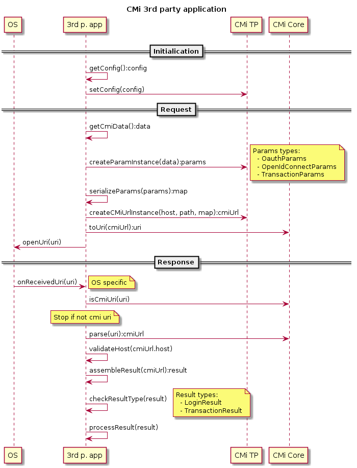

CMi TP High level usage Reference
CMi TP High level usage Reference
CMiTP
CMi TP module is used by TPA to communicate CM (with integrated CMi CM module). CMi SDK for iOS is using URI request for communication with CM and universal links feature of iOS.
Sequence diagram

Request
To start CMi scenario, application should follow these steps:
- create params for particular flow
- serialize params to dictionary
- combine known recepient URI with serialized params
- open URI using call of OS
Params Creation
First of all, TPA need to create instance of class that conforms to CMiParams protocol. Based if chosen scmi scenario, it can be one of CMiOauthParams, CMiOpenIdConnectParams or CMiTransactionParams. For futher details, refer to documentation of params classes.
let baseParams = CMiTP.CMiBaseParams(state: state)
let params = CMiOauthParams(baseParams ...)
let params = CMiOpenIdConnectParams(baseParams ...)
let params = CMiTransactionParams(baseParams ...)
Params Serialization
Created params instance need to be serialized to dictionary. so TPA can use it to create URI. TPA should use protocol method CMiParams.toUrlDataDictionary() to get dictionary.
let dictionary = params.toUrlDataDictionary()
Combining URI & Params
Before using dictionary for URI creation, TPA should put additional values to dictionary
let trackingId = //generate tracking id
dictionary[CMiConstants.flowIdHeaderKey] = trackingId
dictionary[CMiConstants.redirectUriKey] = <tpa_redirect_uri>
where <tpa_redirect_uri> is URI used to deliver response to TPA and <trackingId> is log value used to match all calls amongs components
For combining URI of CM with params, TPA should use CMi-Core module. For futher detail refer to its documentation.
let url: CMiUrl = CMiUrl(version: CMiUrl.Version. <version>,
host: <host>,
scenarioPath: <path>,
data: dictionary)
let validation = CMiUrlValidation(...)
let parser = CMiUrlParser(validation ...)
let uri = try parser.toUrl(url: url)
<version>, <host>, and <path> should be known to TPA as part of interface of CM.
URI Openning
TPA should use resulting uri to open CM. It can be done by calling system method.
UIApplication.shared.open(uri, options: [:], completionHandler: nil)
After succesfull last step, OS will pass control to CM, which will guide user trough particular flow, create response and send it back to TPA.
Response
OS will return control to TPA using delegate method of AppDelegate. To process response from CMi scenario, application should follow these steps:
- implement method of
AppDelegate(with check for URI type) - valide, parse & deserialize received URI
- create result from data in URI
- process result
App Delegate method
iOS will pass URI request to application using particular method in AppDelegate with particular values in parameters.
func application(_ application: UIApplication, continue userActivity: NSUserActivity, restorationHandler: @escaping ([Any]?) -> Void) -> Bool {
guard userActivity.activityType == NSUserActivityTypeBrowsingWeb, let url = userActivity.webpageURL else {
return false
}
return handleCmiV4Url(url: url)
}
Validation, Parsing, Deserialization
For validation and parsing URI, TPA should use CMi-Core module. For futher detail refer to its documentation.
let validation = CMiCore.CMiUrlValidation()
let parser = CMiCore.CMiUrlParser(validation...)
let urlIsValid = parser.validate(url: url)
if !urlIsValid {
showInvalidUriError()
}
let cmiUrl = try parser.parse(url: url)
Result Creation
Data from validated and parsed URI can be used to create CMiResult instance. Particular type is determined by path in URI. The value will correspond to the one used in creation of URI with request (See above, marked as
var result: CMiResult?
if cmiUrl.scenarioPath == <redirLogin> {
result = try CMiTP.CMiLoginResult(data: cmiUrl.data)
} else if cmiUrl.scenarioPath == <redirTrx>
result = try CMiTP.CMiTransactionResult(data: cmiUrl.data)
} else {
preconditionFailure("Unknown path for CMi TP response")
}
where <redirLogin> is TPA’s path for login scenario response and <redirTrx> is TPA’s transaction scenario response.
Result Processing
When processing the result, TPA should first check result code.
if result.result != CMiResult.success {
showErrorFromResult(result.result)
}
When scenario is succesful, result may contain additional data in properties of CMiLoginResult or CMiTransactionResult instance